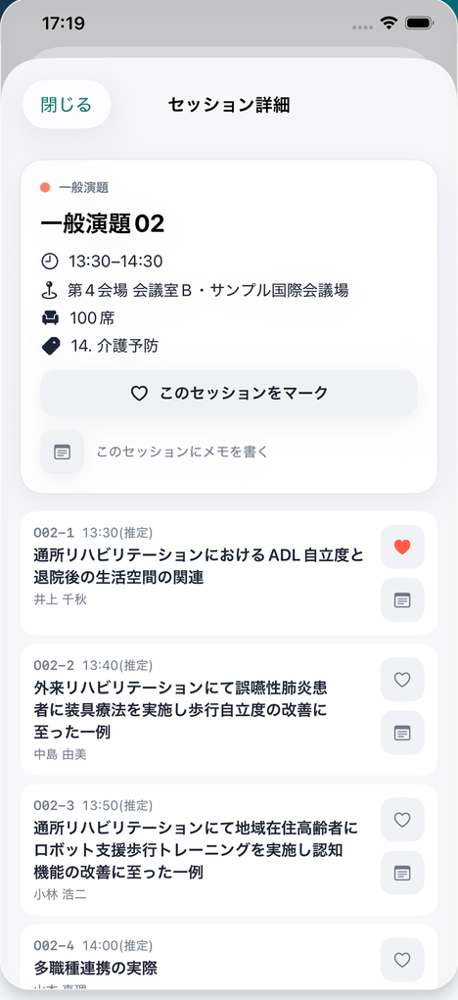
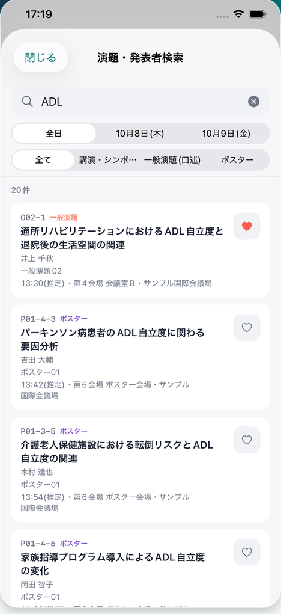
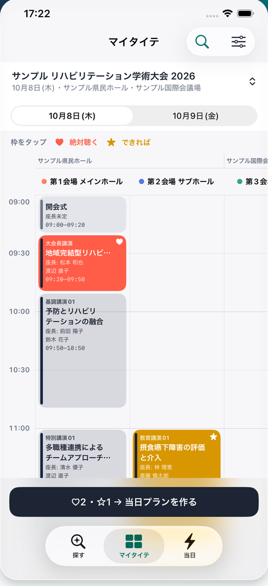
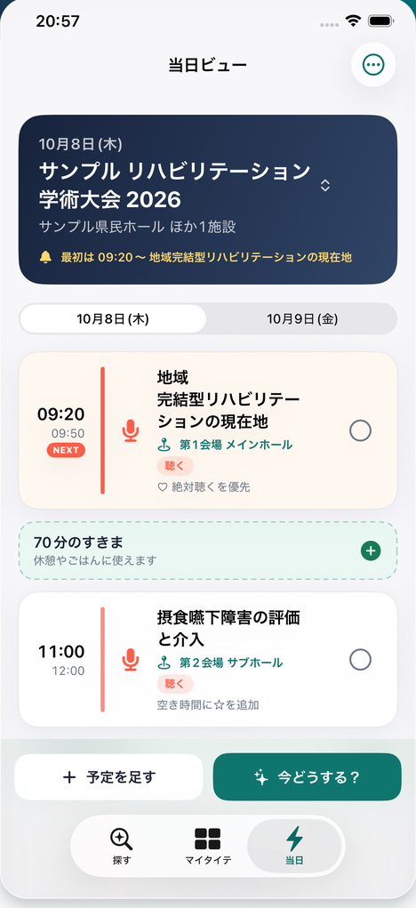

学会・研究大会のための非公式プログラムアプリ
聴きたい演題だけを、自分のタイテに。
学会・研究大会のプログラムから聴きたい演題を選んで、自分だけのタイムテーブルをつくるアプリ。演題検索からメモ、当日ビューまで、学会の一日をポケットひとつでスムーズに。
iPhone向けに無料公開中。Web版はインストール不要で、Android・パソコンからも使えます。
非公式アプリについて 本アプリは、掲載する学会・大会の主催者・運営とは関係のない非公式アプリです。参加者が公式サイトで公開されているプログラム情報をもとに、学会ポケット運営事務局が制作しています。掲載内容は公式発表により変更となる場合がありますので、最新・正確な情報は必ず大会の公式サイトでご確認ください。
学会参加、こんなお悩みありませんか?
-
分厚い抄録集やPDF、
会場で開くのが大変… -
聴きたい演題が、
別会場で同じ時間… -
いま何の演題?
次はどの会場だっけ?
そのお悩み、学会ポケットが
まるごと解決します!
使い方は、かんたん3ステップ。
-
STEP 01 ─ さがす
演題も発表者も、
横断検索。分厚い抄録集をめくらなくても、聴きたい演題にすぐたどり着けます。
- 演題タイトル・発表者名・所属からすばやく検索
- 収録している全大会・全セッションを横断
- セッション詳細で時間・会場・座長までまとめて確認


-
STEP 02 ─ えらぶ
タップだけで、
マイタイテが完成。気になる演題をマークするだけ。自分だけの時間割ができあがります。
- 「絶対聴く」「できれば」の2段階マーク
- 会場×時間のタイムテーブルに自動で整理
- 聴きたい演題の時間かぶりもひと目で分かる

-
STEP 03 ─ まわる
当日は、
「今」と「次」だけ。会場では迷わない。今いるべき場所と、次に向かう場所だけが見えます。
- 当日ビューが「今」と「次」の演題だけを表示
- すきま時間も見えるから、休憩や移動も計画できる
- ホーム画面ウィジェットでロック解除せずに確認

さらに、こんな機能も
-
オフライン対応
一度開いた大会は端末に保存。会場の電波が弱くても見られます。
-
演題メモ
質問したいことや感想を、その場で演題に書き留められます。
-
広告なし・登録不要
会員登録もログインも不要。広告表示もありません。
-
すべて無料
ダウンロードから全機能まで、無料でお使いいただけます。
アプリなしでも、
Web版があります。
ブラウザでそのままタイムテーブルを見られます。演題の検索、聴きたい演題のマーク、メモ、当日ビューまで、主な機能はWeb版でもお使いいただけます。マークとメモはお使いのブラウザに保存され、一度開いた大会はオフラインでも表示できます。
iPhoneをお使いの方は、ホーム画面ウィジェットなどが使えるアプリ版がおすすめです。
Web版をブラウザで開く